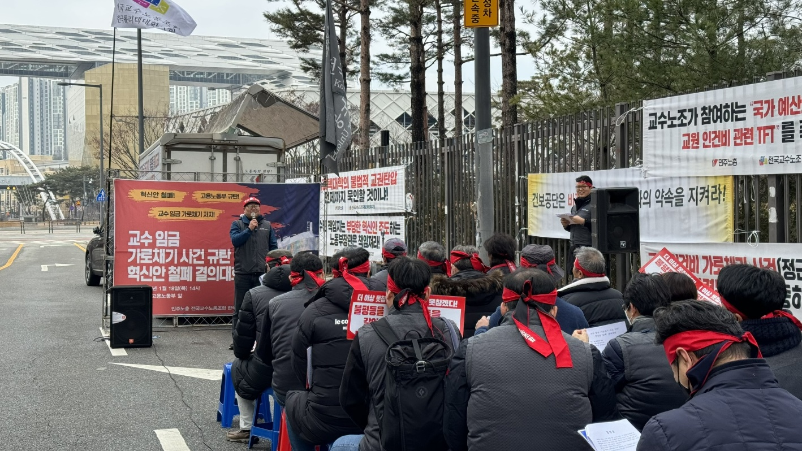

KOREA POLYTECHNICS PROFESSORS’ UNION교수의 권리를 지키고,
교수의 권리를 지키고,
교육의 내일을
함께 만듭니다.
교수 노동자의 자주적 단결로
더 나은 노동조건과 교육환경을 만들어 갑니다.

UNION NEWS
전체 소식 보기 ↗지회의 새로운 소식
TOGETHER IN ACTION
함께한 현장
더 나은 변화를 향한 우리의 발걸음


존중받는 교수,
함께 성장하는 대학.
교수 노동자의 권익과 복지 증진을 위해 함께하겠습니다.
설립선언문 읽기 ↗